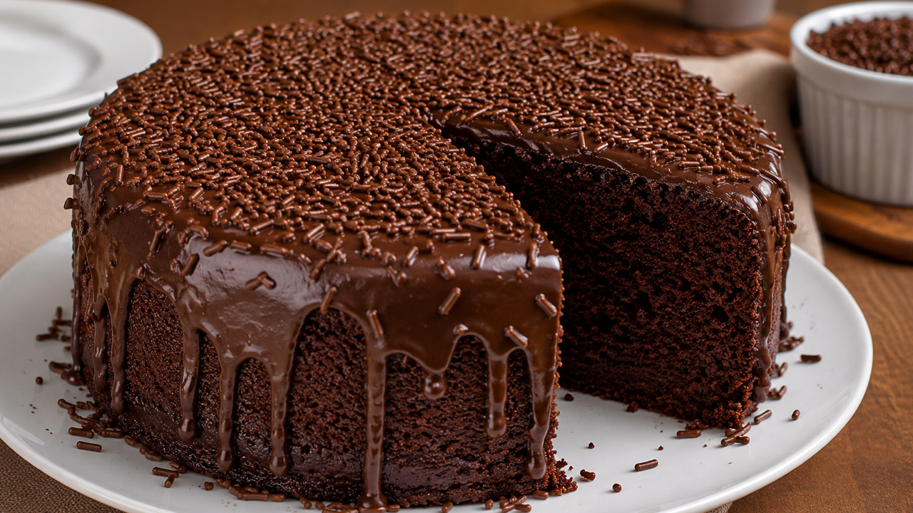

Conheça a Receita

Este bolo de chocolate é perfeito para o café da tarde. Possui uma massa macia, saborosa e uma cobertura cremosa.
Ingredientes
Para a massa:
- 2 xícaras de farinha de trigo
- 1 xícara de açúcar
- 1 xícara de chocolate em pó
- 3 ovos
- 1 xícara de leite
- 1 colher de sopa de fermento
Para a cobertura:
- 1 lata de leite condensado
- 3 colheres de chocolate em pó
- 1 colher de manteiga
- Meia caixa de creme de leite
Modo de Preparo
Preparando a massa:
- Misture a farinha, o açúcar e o chocolate em pó.
- Adicione os ovos e o leite.
- Misture até obter uma massa homogênea.
- Acrescente o fermento delicadamente.
- Coloque a massa em uma forma untada.
- Asse em forno preaquecido a 180°C por aproximadamente 40 minutos.
Preparando a cobertura:
- Coloque o leite condensado, o chocolate e a manteiga em uma panela.
- Mexa em fogo baixo até engrossar.
- Desligue o fogo e misture o creme de leite.
- Espalhe a cobertura sobre o bolo depois de assado.
Deixe seu Comentário
Gostou da receita? Compartilhe sua opinião!